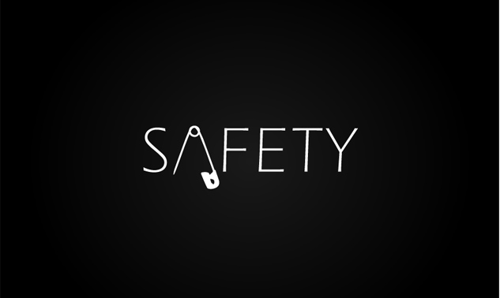

Safety Measures

Camping is a fun way to get family and friends together to enjoy the outdoors. Always be prepared for the unexpected. Do not take unnecessary chances. Do not be careless. Think before you act. Be prepared to administer basic first aid. The most effective way to prevent mishaps is to adequately prepare for the trip. Knowledge of the area, weather, terrain, limitations of your body can help to ensure a safe and enjoyable trip.
| General Tips | Trail Tips | Camping Tips | Trekking Tips | Ziplining Tips |
| Kayak, Canoeing and Rafting Tips | If you get LOST | Check list | First Aid Kit |
General Safety Tips
- Travel with a companion
- You don't want to be by yourself in case of an emergency. Leave a copy of your itinerary with a responsible person. Include such details as the make, year, and license plate of your car, the equipment you're bringing, the weather you've anticipated, and when you plan to return. If you'll be entering a remote area, your group should have a minimum of four people; this way, if one is hurt, another can stay with the victim while two go for help. If you'll be going into an area that is unfamiliar to you, take along someone who knows the area or at least speak with those who do before you set out. If an area is closed, do not go there. Know ahead of time the location of the nearest telephone or ranger station in case an emergency does occur on your trip.
- Be in good physical condition
- Set a comfortable pace as you hike. A group trip should be designed for the weakest member of the group. If you have any medical conditions, discuss your plans with your health care provider and get approval before departing. Make sure you have the skills you need for your camping or hiking adventure. You may need to know how to read a compass, erect a temporary shelter, or give first aid. Practice your skills in advance. If your trip will be strenuous, get into good physical condition before setting out. If you plan to climb or travel to high altitudes, make plans for proper acclimatization to the altitude.
- Think about your footing while travelling
- Think about your footing while travelling near cliffs. Trees and bushes can't always be trusted to hold you. Stay on developed trails or dry, solid rock areas with good footing.
- Wear appropriate clothing
- Wear appropriate clothing for the trail conditions and season.
- Check your equipment
- Keep your equipment in good working order. Inspect it before your trip. Do not wait until you are at the trail-head. Be sure to pack emergency signalling devices.
- Be weather wise
- Keep an eye on current and predicted weather conditions. In this area, weather can change very quickly. Know the signs for approaching storms or changing weather conditions. Avoid bare ridge tops, exposed places, lone trees, streams, and rocks during lightning storms. Find shelter in a densely forested area at a lower elevation. Even in the summer, exposure to wind and rain can result in hypothermia.
- Learn basic first aid
- Learn basic first aid so you will know how to identify and treat injuries and illnesses. Carry a first aid kit with you. Learn how to identify the symptoms of heat exhaustion, heat stroke, hypothermia, and dehydration, and know how to treat them.
- Make camp before dark
- Travelling after darkness has resulted in many accidents from falls, so travel only during daylight. Set up camp well away from the edge of cliffs, and learn the terrain during daylight. If you have to leave camp after dark, stay in areas you have seen in daylight, go with a friend, and always use a good flash light.
- Be alert for slippery areas
- Be alert for slippery areas and take your time to avoid tripping. Low-hanging branches and variable terrains make running unsafe, and leaves can hide slippery areas underneath.
- Alcohol and cliffs don't mix!
- If you drink, stay away from the cliffs. Judgement, agility, and balance are all reduced by alcohol consumption.
- Think before you drink!
- No matter how clean or pure stream water looks, it's likely to contain water-borne parasites and micro organisms that can cause discomfort and sometimes serious illness. Pack your water in, or purify through chemical treatment.